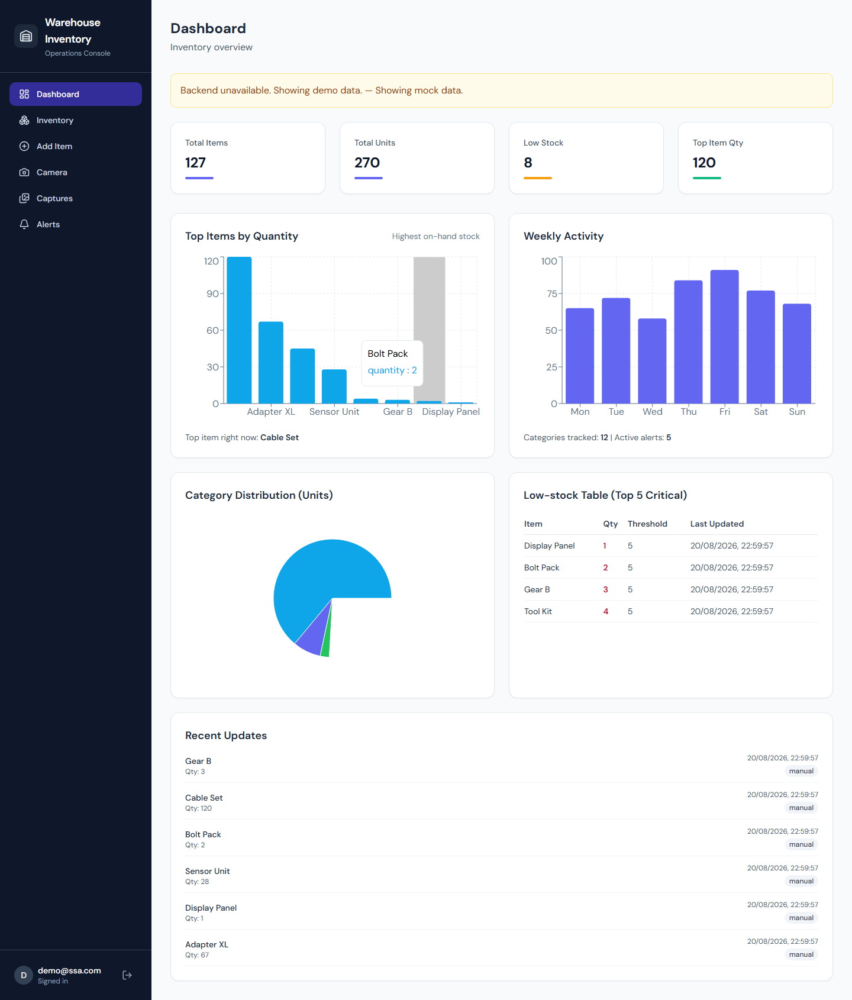
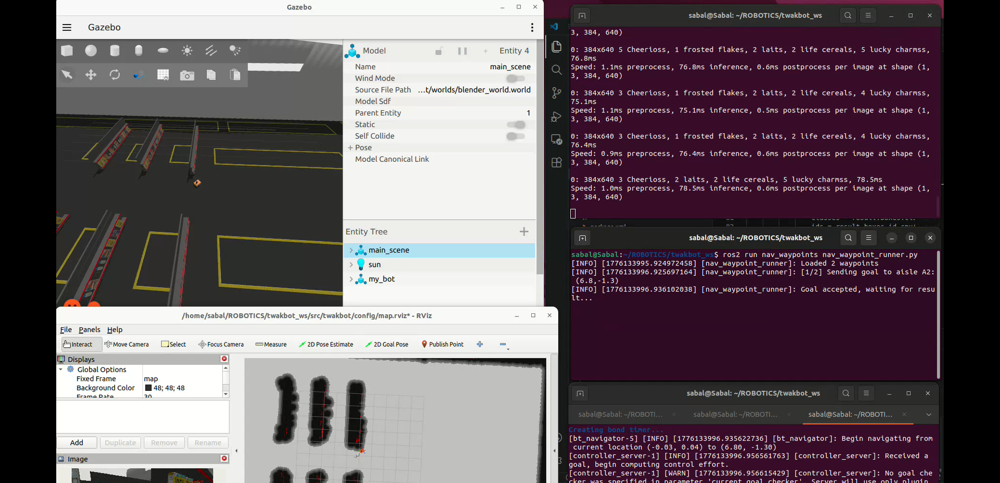
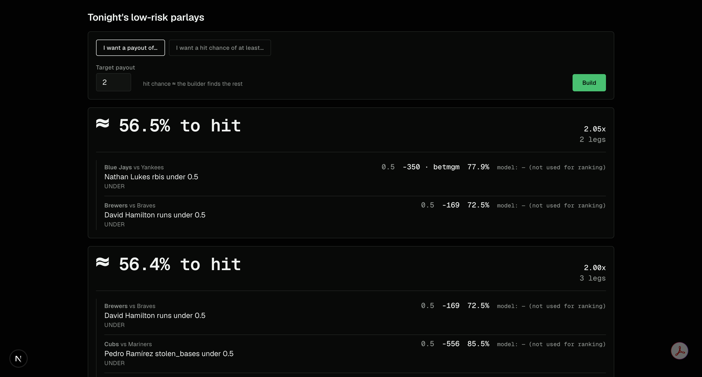
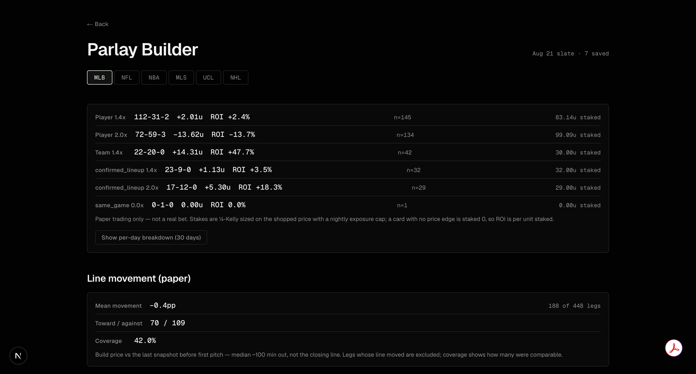
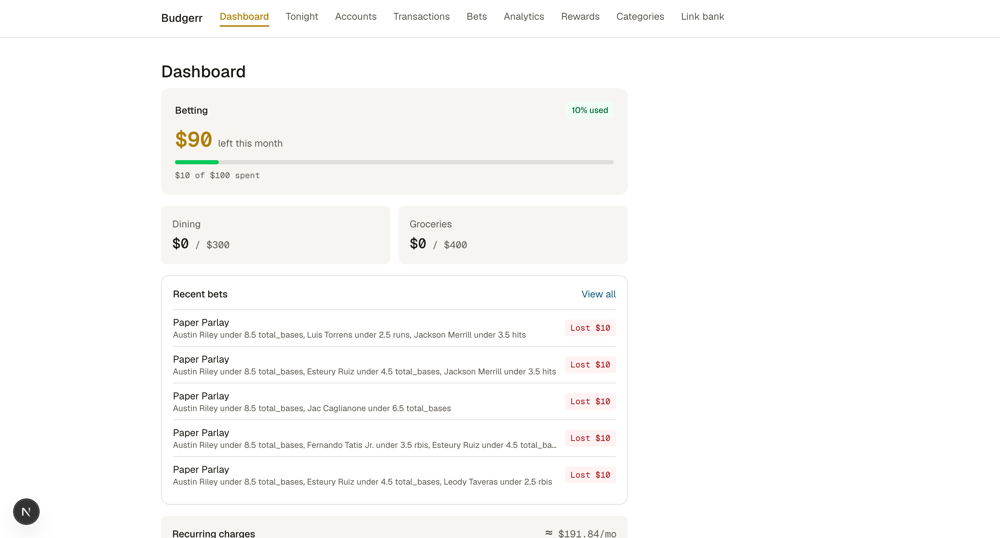
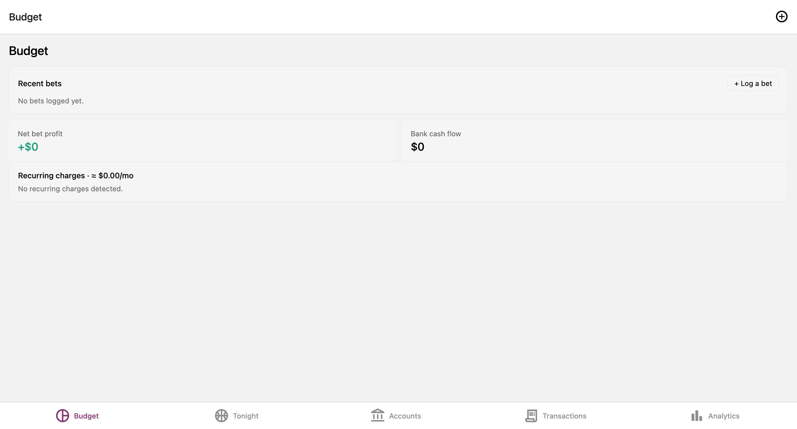

Computer Science graduate from the University of Cincinnati with hands-on experience in machine learning, backend engineering, and full-stack data applications. I build and ship multi-service ML and data products end to end.
I'm a Computer Science graduate from the University of Cincinnati, class of April 2026. My work spans machine learning, autonomous systems, and data analytics, from quantum computing research to real-time sports dashboards.
I've done research at the University of Dayton Research Institute and a data-focused co-op at EMCOR. I care about shipping things that work in the real world.
Languages
Frameworks & ML
Data & DevOps
University of Dayton Research Institute
EMCOR Facilities Services


Real-time item tracking built by integrating a TensorFlow image-recognition model with a Node.js REST API and a PostgreSQL schema with user auth. I built the model integration layer, ran system-wide integration and performance testing, and modeled item flow through the recognition pipeline in a real-time warehouse simulation to measure tracking accuracy and latency at scale.


A FastAPI and PostgreSQL backend with a Next.js dashboard, ingesting ~1M stat rows across 6 leagues from 4 external APIs via 3 scheduled daily jobs. I built an XGBoost model with negative-binomial distributions and conformal calibration (retired after backtesting underperformed market baselines, now rebuilding on better data) and a combinatorial optimizer that ranks outcomes by de-vigged joint probability, backed by a 98-test pytest suite and GitHub Actions CI.


A full-stack budgeting app with a FastAPI and PostgreSQL backend serving React Native (Expo) mobile and Next.js / TypeScript web clients, using the Plaid API for automated transaction sync. It runs an envelope-budgeting engine with category limits, threshold alerts, and trend analysis, plus recurring-charge and price-hike detection via custom clustering. Deployed with Docker Compose, API-key auth, encrypted nightly backups, and GitHub Actions CI across three repos (~78 tests).
Also
An LSTM network forecasting Apple closing prices from 10+ years of historical data, with MinMaxScaler feature scaling, RMSE evaluation, and actual-versus-predicted visualization.